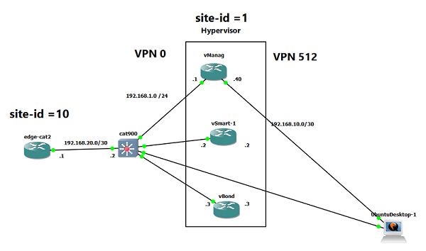
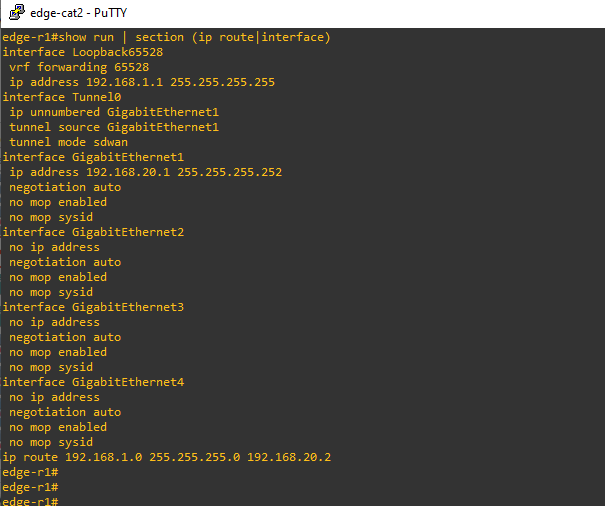
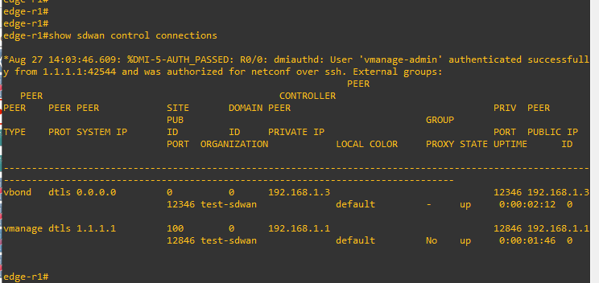
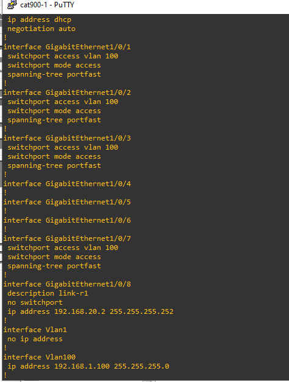
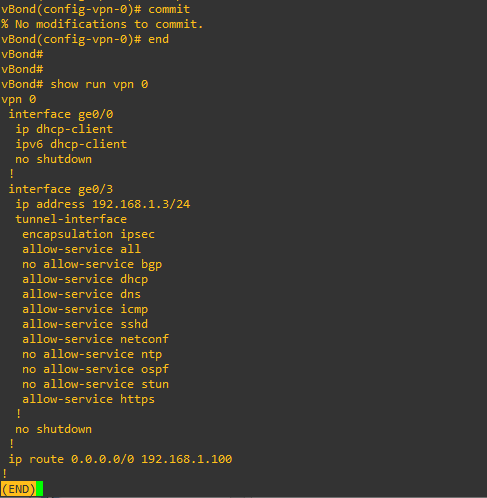
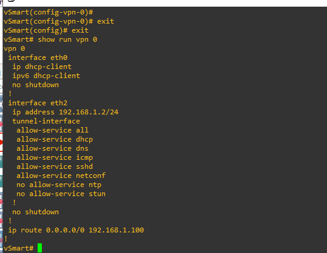
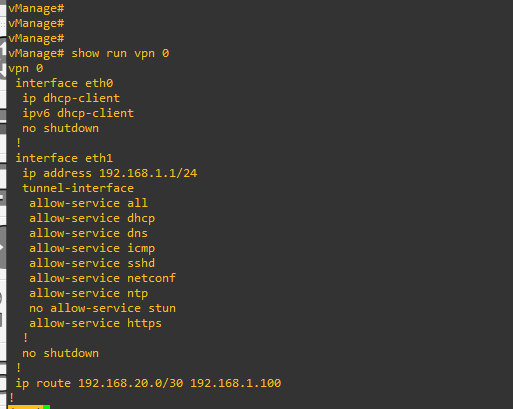
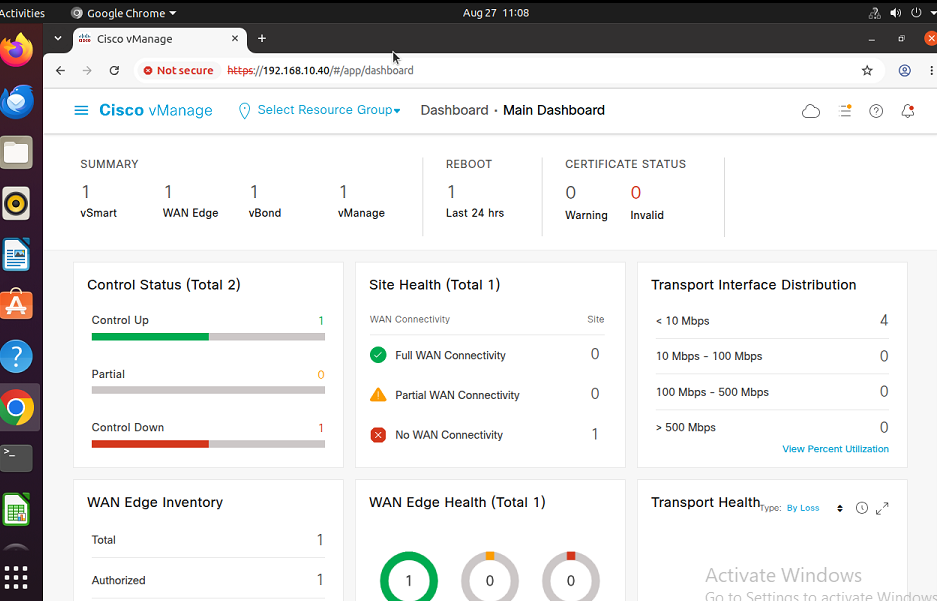
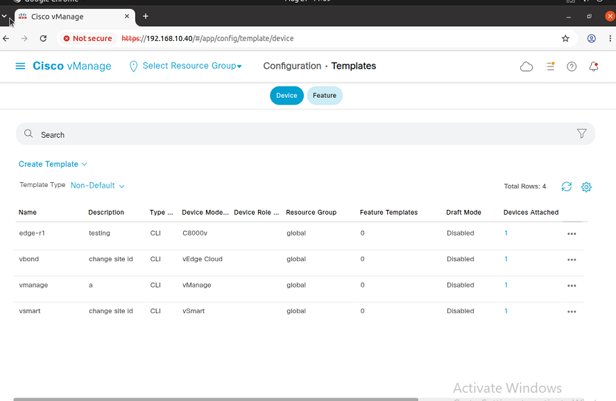
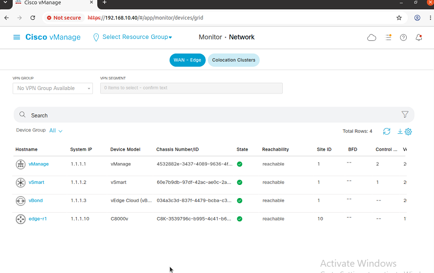

1. SD-WAN Network Topology
The following diagram is the primary topology for this lab. It shows the SD-WAN controllers, edge devices, switching, and WAN connectivity.

3. Assuming the CA on vManage
In this lab, vManage is used as the location where the enterprise root CA private key and public certificate are generated. The CA signs the certificates used by the SD-WAN controllers and edge devices.
3.1 Generate the Root CA Private Key
openssl genrsa -out lab-root-ca.key 4096
The file lab-root-ca.key is the private key
for the lab root CA.
3.2 Generate the Root CA Certificate
openssl req -x509 -new -nodes \
-key lab-root-ca.key \
-sha256 \
-days 3650 \
-out lab-root-ca.pem \
-subj "/C=US/ST=NC/O=test-sdwan/CN=test-sdwan-ROOT-CA"
The resulting lab-root-ca.pem is the public
root certificate.
3.3 Install the Root CA in vManage
Copy the contents of lab-root-ca.pem and add
the certificate under the vManage enterprise certificate
authority settings.
lab-root-ca.key must remain protected.
4. vManage Certificate
Generate the vManage CSR
Generate the certificate signing request for vManage using the vManage certificate workflow.
Sign the CSR
openssl x509 -req \
-in vmanage_csr \
-CA lab-root-ca.pem \
-CAkey lab-root-ca.key \
-CAcreateserial \
-out vmanage.crt \
-days 3650 \
-sha256Install the Signed Certificate
Transfer the generated certificate to the appropriate controller workflow and complete the vManage certificate installation.
5. vBond / vSmart Certificates
Add the Controller
Add the vBond or vSmart device in vManage and generate its CSR.
Transfer the CSR to vManage
Transfer the CSR file from the controller to vManage.
Sign the vBond CSR
openssl x509 -req \
-in /home/admin/vbond_csr \
-CA lab-root-ca.pem \
-CAkey lab-root-ca.key \
-CAcreateserial \
-out vbond.crt \
-days 3650 \
-sha256Transfer the Certificate
Transfer the resulting CRT certificate back to the vBond or vSmart device.
Install the Root Certificate Chain
request root-cert-chain install /home/admin/lab-root-ca.pemInstall the Signed CRT
Copy the signed certificate into the controller certificate installation workflow.
6. Convert C8000V / 8000V to SD-WAN Mode
Cisco Catalyst 8000V / 8000V devices may need to be converted from autonomous mode to SD-WAN control mode before they can participate in the SD-WAN fabric.
6.1 Basic SD-WAN System Configuration
config terminal
system
host-name <unique-hostname>
system-ip <ip-address>
site-id <site-id>
organization-name <org-name>
vbond <vbond-address>
interface Tunnel0
no shutdown
ip unnumbered GigabitEthernet1
tunnel source GigabitEthernet1
tunnel mode sdwan
sdwan
interface GigabitEthernet1
tunnel-interface
encapsulation ipsec
allow-service all6.2 Install the Root CA on the Edge
request platform software sdwan root-cert-chain install bootflash:<root-ca>.pem6.3 Generate the Edge CSR
request platform software sdwan csr upload bootflash:<csr-file>Transfer the CSR generated by the edge device to vManage for signing.
6.4 Sign the Edge CSR on vManage
openssl x509 -req \
-in /home/admin/edge-r1_csr \
-CA lab-root-ca.pem \
-CAkey lab-root-ca.key \
-CAcreateserial \
-out edge-r1.crt \
-days 3650 \
-sha2566.5 Transfer and Install the Certificate
request platform software sdwan certificate install bootflash:edge-r1.crt6.6 Add the Edge to the SD-WAN Fabric
Use the edge chassis ID and certificate serial number when adding the device to vManage/vBond.
request vedge add chassis-num C8K-3539796c-b995-4c41-b6a1-1d7cf7f9a9a2 serial-num 0861ACC2EE28C7D3045CB9CE465149BA72624F497. SD-WAN Edge Configuration Template
The following is a reusable configuration template for
the edge device. Replace all values enclosed in
{{ }} with the values from your lab.
!
! ================================
! SYSTEM
! ================================
system
hostname {{HOSTNAME}}
system-ip {{SYSTEM_IP}}
site-id {{SITE_ID}}
organization-name "{{ORGANIZATION_NAME}}"
vbond {{VBOND_IP_OR_DNS}}
!
! ================================
! TRANSPORT VPN - VPN 0
! ================================
vpn 0
name TRANSPORT_VPN
dns 8.8.8.8 8.8.4.4
!
! --- WAN Interface ---
interface GigabitEthernet1
ip address {{WAN_IP_ADDRESS}} {{WAN_SUBNET_MASK}}
no shutdown
tunnel-interface
encapsulation ipsec
color public-internet
allow-service all
exit
!
! --- Default Gateway ---
ip route 0.0.0.0 0.0.0.0 {{WAN_NEXT_HOP_GATEWAY}}
!
! ================================
! MANAGEMENT VPN - VPN 512
! ================================
vpn 512
name MGMT_VPN
interface GigabitEthernet2
ip address {{MGMT_IP_ADDRESS}} {{MGMT_SUBNET_MASK}}
no shutdown
!
ip route 0.0.0.0 0.0.0.0 {{MGMT_NEXT_HOP_GATEWAY}}
!
! ================================
! SERVICE VPN - VPN 10
! ================================
vpn 10
name LAN_SERVICE_VPN
interface GigabitEthernet3
ip address {{LAN_IP_ADDRESS}} {{LAN_SUBNET_MASK}}
no shutdown
!Configuration Variables
| Variable | Purpose |
|---|---|
| {{HOSTNAME}} | Unique hostname for the SD-WAN edge |
| {{SYSTEM_IP}} | Unique SD-WAN system IP |
| {{SITE_ID}} | SD-WAN site identifier |
| {{ORGANIZATION_NAME}} | Organization name used by the SD-WAN fabric |
| {{VBOND_IP_OR_DNS}} | vBond IP address or DNS name |
| {{WAN_IP_ADDRESS}} | WAN/transport interface IP address |
| {{WAN_NEXT_HOP_GATEWAY}} | WAN provider next-hop gateway |
| {{MGMT_IP_ADDRESS}} | Management interface address |
| {{LAN_IP_ADDRESS}} | Internal LAN/service VPN address |
8. Certificate Workflow Summary
1. Root CA
Generate the private key and root CA certificate on vManage.
2. CSR
Generate a CSR on each controller or edge device.
3. Sign
Use the lab root CA certificate and private key to sign the CSR.
4. Install
Transfer and install the signed certificate on the corresponding device.
5. Authenticate
Add the device using its chassis/certificate information and establish SD-WAN control connections.
9. SD-WAN Lab Screenshots
The remaining lab images are displayed here at the end of the documentation. Click any image to open a larger zoomable view.








